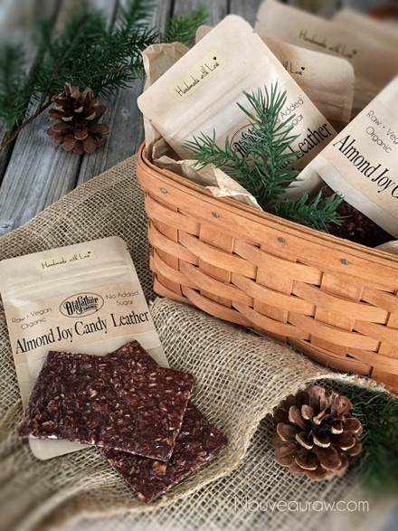
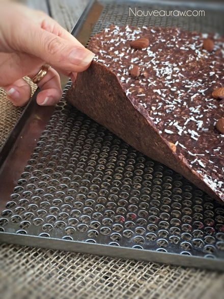
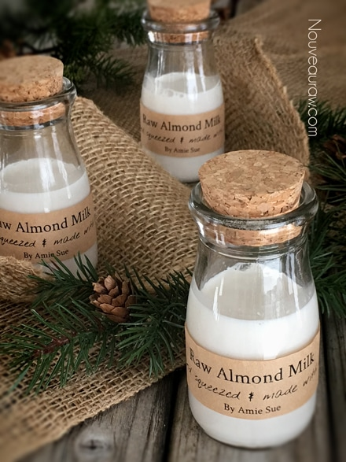

Almond Joy Candy Leathers

~ raw, vegan, gluten-free ~
Here is an amazing coconut and almond treat blended with rich, dark chocolate. This candy leather can be easily recognized by the strong smell of sweetness and coconut that escapes from the package as soon as you open it. The best part of all is that it tastes even better than its mouth-watering scent would have you believe.
These candy leathers can be cut into any shape and size. It just depends on how you want to package them… that is if you want to package them at all. They are perfect for gifts or even for quick grab-n-go treats for my hubby.
I cut the leather steps into 4” x 2.5” strips (to fit my bags) This created 12 packages. If you are interested, I ordered the Copious 4″ x 6.5″ Kraft Window Stand Up Pouch (2 oz. | 60g). I originally bought them for my single-serving cereal pouches but had some leftover, so I used them for this project. I have ordered many different bags from different companies over time and love the quality of these.
If you don’t want to get that fancy, you can use ziplock snack-sized bags. I have used these by the hundreds when I make a big batch of fruit leathers for snacks for gift giving. They are made of BPA-free plastic and are 6-5/8″ x 3-1/4”. A perfect snack size.
One of the many things that I love about this recipe is that it doesn’t contain any sugars, other than the natural fruit sugars found in bananas. The most important “ingredients” in these leathers are not listed down below… vitamin B6 & C, potassium, fiber, protein, medium-chain triglycerides which burn as fuel in your body…antioxidants, omega-3 essential fatty acids which are shown to have heart-healthy effects… the list goes on. Not only does it taste amazing… it can do amazing things for your body. I best let you go. I just get so excited when something can taste so good and yet can be so good for me! Many blessings, amie sue
 Ingredients:
Ingredients:
yields 2 (12” x 12”) sheets
- 8 ripe bananas
- 1/4 cup ground flax seeds
- 6 Tbsp raw cacao powder
- 1 Tbsp lemon juice
- 1/2 tsp Himalayan pink salt
- 1 cup shredded coconut
- 1 cup chopped raw almonds, soaked & dehydrated
Preparation:
- In the food processor, fitted with the “S” blade, combine the bananas, flax seeds, cacao powder, lemon juice, and salt. Process until it is nice and creamy.
- Add the coconut and almonds and pulse just a few times to mix it in.
- Spread half of the batter on the non-stick teflex sheets that come with the dehydrator.
- Be sure to spread it evenly, so it dries evenly.
- Add more almonds or coconut on top if desired.
- Dehydrate at 145 degrees (F) for 1 hour, then reduce to 115 degrees (F) for about 8 hours.
- Every once in a while check in on it. You know it is done when you can carefully peel the “wrap” off of the teflex sheet.
- If you have any “wet” spots on the backside, flip the wet side up and continue drying for another hour or so.
- To store: lay out a large piece of plastic wrap, lay the chocolate wrap on the plastic, and roll it up, tucking the sides underneath. Or package as you see fit.
The Institute of Culinary Ingredients™
- What is raw cacao powder?
- What is Himalayan pink salt and does it matter? Click (here) to read more about it.
- Learn how to grind your own flaxseeds for ultimate freshness and nutrition. Click (here).
Culinary Explanations:
- Why do I start the dehydrator at 145 degrees (F)? Click (here) to learn the reason behind this.
- When working with fresh ingredients, it is important to taste test as you build a recipe. Learn why (here).
- Don’t own a dehydrator? Learn how to use your oven (here). I do however truly believe that it is a worthwhile investment. Click (here) to learn what I use.

These candy leathers taste fantastic with
a fresh glass of almond milk.

© AmieSue.com